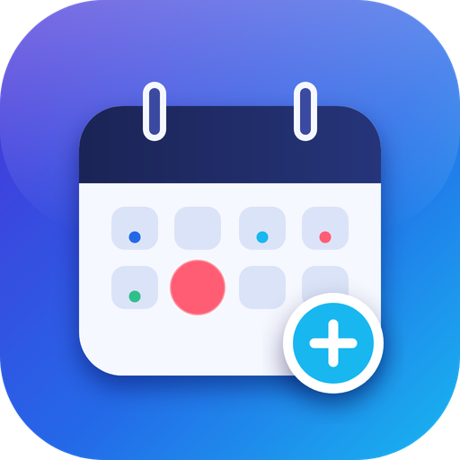

Calendario Moderno
Widget calendario per KDE Plasma 6
Informativa sulla privacy
Ultimo aggiornamento: 8 novembre 2026
Chi siamo
Calendario Moderno è un widget per KDE Plasma 6 sviluppato da un singolo sviluppatore indipendente. Contatto: luca.fias131098@gmail.com.
Dati a cui accede l'app
Dopo il tuo consenso, l'app usa l'API di Google Calendar (ambito https://www.googleapis.com/auth/calendar, più openid e email) per:
- leggere l'elenco dei tuoi calendari e dei relativi eventi, per mostrarli nel widget;
- creare, modificare ed eliminare eventi, solo quando sei tu a farlo dal widget;
- leggere il tuo indirizzo email, per mostrare quale account è collegato.
Come vengono trattati i dati
- Tutto avviene sul tuo computer. L'app non usa server dell'autore: le richieste vanno direttamente dal tuo computer ai server di Google.
- Il token di accesso e una copia degli eventi (cache per l'uso offline) sono salvati in locale, nella cartella
~/.local/share/calendario-moderno/, con permessi riservati al tuo utente. - L'autore non riceve, non raccoglie, non vende e non condivide alcun dato. Nessuna analisi, pubblicità o tracciamento.
Limited Use
L'uso e il trasferimento a qualsiasi altra app delle informazioni ricevute dalle API di Google rispetta la Google API Services User Data Policy, inclusi i requisiti di Limited Use.
Revoca e cancellazione
- Dalle impostazioni del widget, il pulsante Disconnetti revoca l'accesso presso Google e cancella il token locale.
- Puoi revocare l'accesso in qualsiasi momento da myaccount.google.com/permissions.
- Per eliminare anche la cache degli eventi, cancella la cartella
~/.local/share/calendario-moderno/.
Modifiche
Eventuali modifiche a questa informativa saranno pubblicate in questa pagina con la data di aggiornamento.
English summary
Calendario Moderno is a KDE Plasma 6 widget. With your consent it uses the Google Calendar API (scope calendar, plus openid and email) to read, create, edit and delete your calendar events, only when you do so from the widget. Everything happens on your own computer: tokens and an offline event cache are stored locally under ~/.local/share/calendario-moderno/. The developer operates no server and does not receive, collect, sell or share your data; there are no analytics or ads. The app's use of information received from Google APIs adheres to the Google API Services User Data Policy, including the Limited Use requirements. You can revoke access with the Disconnect button in the widget settings or at myaccount.google.com/permissions. Contact: luca.fias131098@gmail.com.